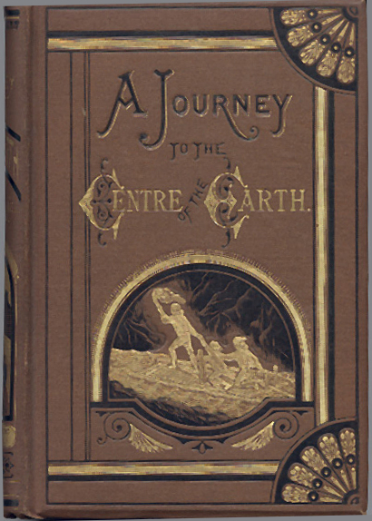

The Book
Journey to the Center of the Earth (or Voyage au centre de la Terre in its original French) is an 1864 science fiction novel by Jules Gabriel Verne, and is considered an exemplar of the genre of subterranean fiction. The story involves German professor Otto Lidenbrock who believes there are volcanic tubes going toward the center of the Earth. Guided by a mysterious runic cryptogram he, his nephew Axel, and their guide Hans descend into the Icelandic volcano Snæfellsjökull, encountering many adventures, including prehistoric animals and natural hazards, before eventually coming to the surface again in southern Italy, at the Stromboli volcano.
The book was inspired by Charles Lyell's Geological Evidences of the Antiquity of Man of 1863 (and probably also influenced by Lyell's earlier ground-breaking work Principles of Geology, published 1830–33). By that time geologists had abandoned a literal biblical account of Earth's development and it was generally thought that the end of the last glacial period marked the first appearance of humanity, but Lyell drew on new findings to put the origin of human beings much further back in the deep geological past. Lyell's book also influenced Louis Figuier's 1867 second edition of La Terre avant le déluge ("The Earth before the flood") which included dramatic illustrations of savage men and women wearing animal skins and wielding stone axes, in place of the Garden of Eden shown in the 1863 edition.
The main characters of Verne's work include:
- Professor Otto Lidenbrock: a professor of geology.
- Axel: the nephew of Professor Lidenbrock, overcautious and unadventurous student.
- Hans Bjelke: a Danish-speaking Icelandic eiderduck hunter who becomes their guide; dependable, resourceful and imperturbable.
- Gräuben: the goddaughter of Professor Lidenbrock with whom Axel is in love, from the Vierlande area of Hamburg.
- Martha: the maid at the house of Professor Lidenbrock.
It is noteworthy that at the time of writing Verne had no hesitation with having sympathetic German protagonists with whom the reader could identify. Verne's attitude to Germans would drastically change in the aftermath of the 1871 Franco-Prussian War. After 1871, the sympathetic if eccentric Professor Otto Lidenbrock would be replaced in Verne's fiction by the utterly evil and demonic Professor Schultze of The Begum's Fortune.
The first English edition was published in its entirety by Henry Vickers in 12 installments of a Boys magazine entitled "The Boys Journal". The plates are more numerous than the book form which was published with an 1872 title page. If it was released in 1871 as a single volume it was late in the year. This "True" first edition also found in an octavo normal book size (not Annual size), has been overlooked by bibliographers. It has a place of pre-eminence up to about a 3rd of the way through the 12 monthly issues and then slides down into the main body of the journal. The Magazine does not seem to have survived in its loose format of 12 individual parts.